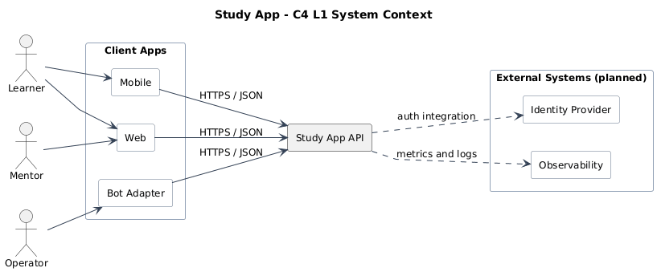
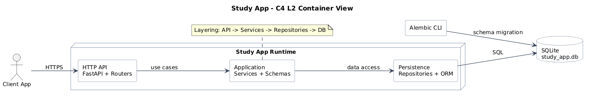
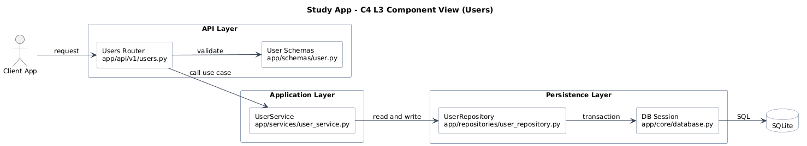
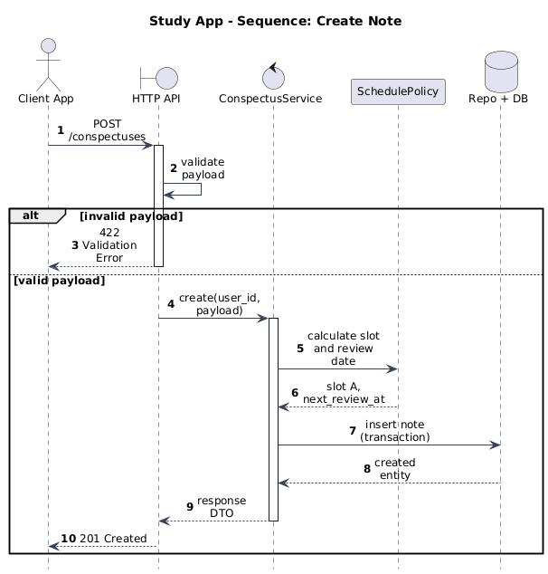
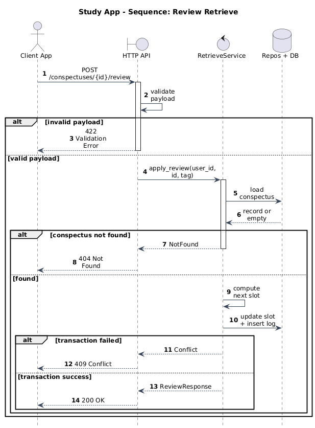
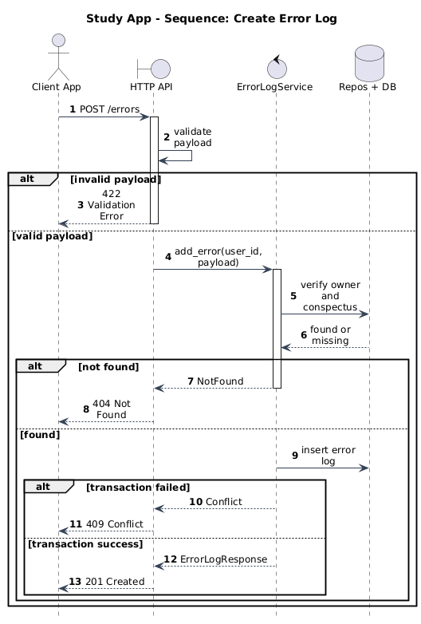

ETR Study API — Scope and Requirements
This document defines the problem statement, service boundaries, requirements, and key scenarios for the ETR (Extract-Transform-Retrieve) backend built with FastAPI + SQLite + SQLAlchemy.
1. Problem Statement
Product goal: provide an API to manage ETR-based learning flows and control spaced reviews through A/B/C/D slots.
Problem: users struggle to retain material systematically and keep an actionable mistake log after review sessions.
Solution: the service stores note structure (Extract/Transform), manages Retrieve scenarios, moves cards across slots, and maintains an Error Log.
2. Context and Boundaries
In scope:
- user registration/update;
- creating and reading study notes;
- retrieving notes that are due for review;
- moving between slots by tags
easy/hard/forgot; - error-log management;
- ETR schedule recommendations.
Out of scope (current version): authentication/authorization, multi-user roles, push notifications, progress analytics, file attachments.
3. Architectural Decomposition
3.1 C4 Level 1 - System Context

Source: docs/uml/architecture/system_context_view.puml
3.2 C4 Level 2 - Container View

Source: docs/uml/architecture/container_view.puml
3.3 C4 Level 3 - Component View

Source: docs/uml/architecture/system_component_view.puml
4. Functional Requirements
FR-1. User Management
- The service must create a user on the first request by
system_user_id. - The service must update
username,full_name, andtimezoneon repeated registration requests. - The service uses internal
idand externalsystem_user_idfor downstream operations.
FR-2. Note Creation
- A note must include Extract fields: keywords, prompts/gaps, and hints.
- A note must include Transform fields: a compact explanation in 5-7 bullet points.
- On creation, a note must be placed into slot
Aand receivenext_review_at.
FR-3. Retrieve Scenarios
- The service returns notes whose review time has come (
due). - The service updates the slot by review tag:
easy-> next slot (A->B->C->D);hard/forgot-> return to slot A.
- Every review action must be logged in
retrieval_logs.
FR-4. Error Log
- The service must store: question/key, incorrect answer, corrected answer.
- The service must return the latest N mistakes from newest to oldest.
FR-5. Summary and Schedule
- The service must provide distribution of active notes across A/B/C/D slots.
- The service must provide a recommended ETR session schedule.
5. Non-Functional Requirements
| Category | Requirement |
|---|---|
| Performance | Typical API requests should complete in under 300 ms with a local DB and light load. |
| Reliability | Write operations must be transactional; failures must trigger rollback semantics. |
| Maintainability | Transport logic must be separated from business logic; domain layer must be reusable. |
| Extensibility | New delivery channels (CLI, gRPC, another bot) should be added via adapters without rewriting core logic. |
| Documentability | The HTTP layer must publish an OpenAPI contract and human-readable endpoint documentation. |
6. API Contracts (Required)
POST /api/v1/users/register Register user
GET /health Health check
7. Sequence Diagrams
7.1 Note Creation

Source: docs/uml/sequences/create_conspectus_sequence.puml
7.2 Retrieve Review Scenario

Source: docs/uml/sequences/review_retrieve_sequence.puml
7.3 Error Logging

Source: docs/uml/sequences/error_log_sequence.puml